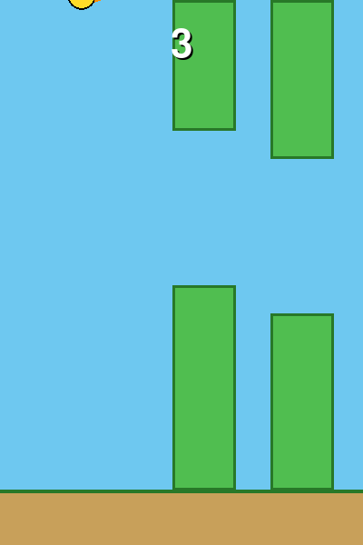

- ESPACIO salta, R reinicia.
- Elige tu pájaro con 1 / 2 / 3 (Clásico, Azulito o Fueguito).
- La dificultad sube de a poco: los tubos van más rápido y el hueco se achica.
- Guarda tu récord en
record.txt. Sonidos hechos con números.
Necesita: Python 3 + pygame · Linux, Windows y Mac
⬇ Descargar .zip (7 KB) 🎮 Jugar en el navegador▶️ Cómo jugar
- Descarga y descomprime el zip.
- Instala pygame:
pip install pygame - Corre
python3 flappy.py(en Windows:python flappy.py; en Linux/Mac también sirve./jugar.sh).
🎮 Controles
| ESPACIO | saltar |
| 1 / 2 / 3 | elegir pájaro (antes de empezar) |
| R | reiniciar |
| ESC | salir |
⌨️ Cambiar los controles
Abre controles.txt (está junto a flappy.py) y cambia la tecla después del =. Así viene de fábrica:
saltar = space reiniciar = r salir = escape pajaro1 = 1 pajaro2 = 2 pajaro3 = 3
Nombres válidos: letras (a, b...), flechas (up, down, left, right), space, return, tab, left shift, left ctrl y números. Si escribes una tecla que no existe, el juego avisa y usa la de siempre.
🔧 Para cambiar cómo se siente
Arriba de flappy.py están GRAVEDAD, SALTO, VELOCIDAD_TUBOS y SKINS (los colores de cada pájaro: inventa el tuyo).